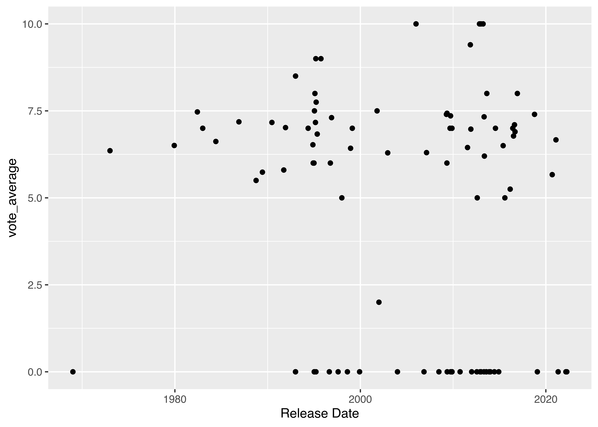

data(mtcars)
r1 <- t.test(mtcars$mpg~mtcars$vs)
print(r1)
##
## Welch Two Sample t-test
##
## data: mtcars$mpg by mtcars$vs
## t = -4.6671, df = 22.716, p-value = 0.0001098
## alternative hypothesis: true difference in means between group 0 and group 1 is not equal to 0
## 95 percent confidence interval:
## -11.462508 -4.418445
## sample estimates:
## mean in group 0 mean in group 1
## 16.61667 24.55714
r2 <- lm(mtcars$mpg ~ mtcars$vs)
print(r2)
##
## Call:
## lm(formula = mtcars$mpg ~ mtcars$vs)
##
## Coefficients:
## (Intercept) mtcars$vs
## 16.62 7.9427 Functional Programming
In this section, we’re going to change focus slightly from learning specific functions to learning programming patterns. We’re going to start this process by talking about functional programming and its connection to lists. While this topic may be a bit advanced if you’re just starting to learn how to program, it may help to skim through the deeper explanation so that you can at least recognize some of these words if you encounter them later.
27.1 Objectives
- Use functional programming to replace for loops
- Articulate why functional programming can be preferable to using for loops
- Use functional programming to clean data, model data subsets, and assemble hierarchical data.
27.2 Programming Philosophies
This section is intended for everyone, but I do not expect that people who are just learning to program for the first time will fully absorb everything in this section. Get what you can out of this, use it to improve how you write code, and come back to it later if it’s too confusing.
Just as spoken languages fall into families, like Indo-European or Sino-Tibetan, programming languages also have broad classifications. Here are a few “families” or classifications of programming languages [1]:
- Many languages are procedural: a program provides a list of instructions that tell the computer what to do with provided input. C, Pascal, Fortran, and UNIX shells are naturally procedural. JavaScript is also a fairly natural procedural language. Many R analysis scripts are also naturally written in a procedural style; SAS code is almost always procedural.
- Declarative languages use code to describe the problem that needs to be solved, and the language figures out how to solve it. SQL is the most common declarative language you’ll encounter for data-related tasks.
- Object oriented languages (sometimes abbreviated OOP, for object-oriented programming) manipulate collections of objects or classes. Data is stored in classes that have associated functions, which are often called methods. Java is explicitly object-oriented; C++ and Python support object-oriented programming but don’t force you to use those features.
- Functional programming languages describe a problem using a set of functions, which only take inputs and produce outputs. Functions don’t have any internal tracking of state - purely functional languages move from input to output without storing variables or even printing output to the command line, but it is common to adopt a functional approach to programming without requiring strict adherence to all principles of a fully functional approach. Haskell and Rust are fairly standard functional programming languages.
Hadley’s talk on The Joy of Functional Programming for Data Science
Functional programming languages have a goal of writing pure functions - functions that do not change the global state (stuff stored in objects, memory, parameters, or files) of the program and thus have no side effects. The return value of a pure function is based solely on the inputs to the function. Not all functions can be pure functions - for instance, there’s no pure way to do file IO operations. But it is a nice goal to be able to move parameters into functions and have the correct object returned from that function, so that you can pipe multiple operations together into a pipeline.
Most general-purpose languages like C++ and Python and even some domain languages like R support multiple different programming paradigms. While preparing to write this chapter, I saw functional programming books with examples in Java [2], JavaScript [3], and C# [4] - all languages that I would associate with OOP or procedural styles. I also found books teaching object oriented programming using Fortran 90-95 [5], which is something I wouldn’t have considered possible.
All of this is to say that while certain languages are built around principles like OOP or functional programming, almost every language has users who rely more heavily on one approach than the other. There are very few “pure” programming languages, which reminds me of one of my favorite quotes about English:
“The problem with defending the purity of the English language is that English is about as pure as a cribhouse whore. We don’t just borrow words; on occasion, English has pursued other languages down alleyways to beat them unconscious and rifle their pockets for new vocabulary.” ― James D. Nicoll
27.2.1 Object Oriented Philosophy in R and Python
When you call df.size() in Python, you are calling the size method that is part of the df object, which is a DataFrame. This suggests that Pandas, at least, is programmed using an object-oriented paradigm.
An easy example of R’s object oriented nature is that when you fit different models or perform different tests, the default output is different.
The output is different because each test/regression model object has a different print method, which allows R to create different output for each type of object.
Functional programming allows us to write programs that are more modular, and thus, are easier to test and debug. In addition, functional programming encourages you to think about data pipelines: a sequence of steps that are reproducible and reusable for different data sets and analyses. Functional programming is convenient for another (more esoteric, but important) reason - it allows you to prove that a function or series of functions is actually correct (rather than just testing input/output combinations).

If you have been using the R pipe (|> or %>%), you didn’t realize it, but you were already using functional programming. Piping results from one function to another in a chain is a prime example of the “pure function” idea - it allows us to chain each step of a sequence together to create a sequence that is modular and testable.
27.2.2 A simple Functional Example
A functional is a function that takes another function as input and returns a vector as output.
One simple example of a functional that is found in both R and Python is the apply function (or variants in R like lapply, sapply, tapply). In Python, .apply is a method in Pandas, but we can find an even more low-level equivalent in the ideas of list comprehensions and map functions.
One additional concept that is helpful before we start is the idea of a lambda function - a small anonymous function (that is, a function that is not named or stored in a variable). Lambda functions are great for filling in default arguments, but they have many other uses as well.
Can you identify the lambda functions in each of the following examples?
This code generates 5 draws from a normal random variable with the specified mean and standard deviation 1.
lapply(1:5, function(x) rnorm(5, mean = x, sd = 1))
## [[1]]
## [1] -2.16762210 1.99905314 -0.08759488 2.22009213 1.64652776
##
## [[2]]
## [1] 2.475177 3.264478 1.280447 1.504710 1.371149
##
## [[3]]
## [1] 2.476403 1.873314 3.501130 3.464979 3.618766
##
## [[4]]
## [1] 4.135294 4.547488 5.259023 4.651852 4.428149
##
## [[5]]
## [1] 4.201161 4.514928 3.938922 5.402455 5.304307Or, if you have R 4.1.0 or above, you can use a shorthand version:
lapply(1:5, \(x) rnorm(5, mean = x))
## [[1]]
## [1] 1.3395250 -0.1268683 0.4233265 1.3424008 1.8946875
##
## [[2]]
## [1] 1.366347 1.849088 2.024996 2.130203 2.991602
##
## [[3]]
## [1] 2.036583 3.385580 3.616681 3.802413 2.755437
##
## [[4]]
## [1] 5.155240 4.172880 2.434981 4.995162 3.531419
##
## [[5]]
## [1] 4.375204 5.086924 5.111008 4.633185 6.211562The \(x) is shorthand for function(x) and allows you to quickly and easily define anonymous functions in R.
This code generates 5 draws from a normal random variable with the specified mean and standard deviation 1.
import numpy as np
# List comprehension approach
r1 = [np.random.normal(i, size = 5) for i in range(1, 6)]
print(r1)
## [array([ 1.24857545, 1.49689476, -0.44984772, 0.20420764, 3.06522857]), array([0.71643789, 2.6619888 , 3.1023202 , 2.8393277 , 1.20607516]), array([1.93763234, 3.2012511 , 2.66445568, 3.26577021, 3.96375901]), array([4.57377777, 4.32844887, 3.99245661, 3.87456004, 2.45354337]), array([5.40400778, 4.79334176, 5.72749392, 4.78910161, 4.19462971])]
# Functional approach
# Defining a lambda function allows us to fill in non-default options
r2 = map(lambda a: np.random.normal(a, size = 5), range(1, 6))
# This is what map spits out by default
print(r2)
## <map object at 0x7f1610e8dff0>
# get your results back out with list()
r2b = list(r2)
print(r2b)
## [array([ 0.55513415, 1.51047086, -0.0692891 , 0.52177732, 1.16883951]), array([2.26809068, 0.9552631 , 1.95039367, 2.21439357, 1.13564023]), array([2.5497408 , 3.82577465, 4.11895343, 2.16746233, 2.94641842]), array([3.76699069, 5.27928174, 5.9725059 , 3.82374019, 5.55132694]), array([5.70828473, 4.13119899, 4.49605868, 4.57137864, 3.21304835])]27.3 Replacing Loops with Functional Programming
One really convenient application of functional programming is to replace loops. As Hadley Wickham says in [6],
the real downside of for loops is that they’re very flexible: a loop conveys that you’re iterating, but not what should be done with the results
That is, in many cases when programming with data, what we want is to iterate over a vector and return a vector of results. This is a perfect use case for functional programming, since we’re specifying both that we’re iterating AND more explicitly collecting the results into a form that makes sense.
If we work with this definition of functional programming, then python list comprehensions are also a functional approach: they specify how the results are collected (usually by putting [] around the statement) and how the iteration will occur [7].
There is an excellent vignette comparing Base R functional programming approaches to the purrr package that is worth a look if you’ve used one and want to try the other [8].
Let’s look at a few examples.
Suppose we want to look at the Lego data and create a decade variable that describes the decade a set was first released.
lego <- read.csv("https://raw.githubusercontent.com/srvanderplas/datasets/main/clean/lego_sets.csv")
lego$decade <- sapply(lego$year, \(x) floor(x/10)*10)
head(lego[,c("set_num", "name", "year", "decade")])
## set_num name year decade
## 1 001-1 Gears 1965 1960
## 2 0011-2 Town Mini-Figures 1979 1970
## 3 0011-3 Castle 2 for 1 Bonus Offer 1987 1980
## 4 0012-1 Space Mini-Figures 1979 1970
## 5 0013-1 Space Mini-Figures 1979 1970
## 6 0014-1 Space Mini-Figures 1979 1970Strictly speaking, this use of sapply isn’t necessary - because R is vectorized by default, we could also have used lego$decade <- floor(lego$year/10)*10. However, there are functions in R that are not fully vectorized, and it is useful to know this approach for those use-cases as well, and it’s easier to demonstrate this approach with a relatively simple use case.
In purrr, you can create anonymous functions using ~ with . as a placeholder. If you need more parameters, you can use .x, .y and map2 (for now) or .1, .2, .3, ... with pmap.
library(purrr)
library(readr)
library(dplyr)
lego <- read_csv("https://raw.githubusercontent.com/srvanderplas/datasets/main/clean/lego_sets.csv")
lego <- lego |> # Either pipe will work here
mutate(decade = purrr::map_int(year, ~floor(./10)*10))
lego |>
select(set_num, name, year, decade) |>
head()
## # A tibble: 6 × 4
## set_num name year decade
## <chr> <chr> <dbl> <int>
## 1 001-1 Gears 1965 1960
## 2 0011-2 Town Mini-Figures 1979 1970
## 3 0011-3 Castle 2 for 1 Bonus Offer 1987 1980
## 4 0012-1 Space Mini-Figures 1979 1970
## 5 0013-1 Space Mini-Figures 1979 1970
## 6 0014-1 Space Mini-Figures 1979 1970import pandas as pd
import math
lego = pd.read_csv("https://raw.githubusercontent.com/srvanderplas/datasets/main/clean/lego_sets.csv")
lego['decade'] = [math.floor(i/10)*10 for i in lego.year]
lego[['set_num', 'name', 'year', 'decade']].head()
## set_num name year decade
## 0 001-1 Gears 1965 1960
## 1 0011-2 Town Mini-Figures 1979 1970
## 2 0011-3 Castle 2 for 1 Bonus Offer 1987 1980
## 3 0012-1 Space Mini-Figures 1979 1970
## 4 0013-1 Space Mini-Figures 1979 1970For a more interesting example, though, let’s consider fitting a different linear regression for each generation of Pokemon, describing the relationship between HP (hit points) and CP (combat power, aka total in this dataset).
I am sure that the python code I’ve written here is a bit kludgy, so if you are more fluent in python/pandas than I am, please feel free to submit a pull request if you know a better or more “pretty” way to do this.
Example: Pokemon modeling
poke <- read.csv("https://raw.githubusercontent.com/srvanderplas/datasets/main/clean/pokemon_gen_1-9.csv")
# Get rid of mega pokemon - they're a different thing
poke <- subset(poke, !grepl("Mega", poke$variant)) # step 1
# Split into a list of data frames from each gen
poke_gens <- split(poke, poke$gen) # step 2
# Fit linear regressions for each generation of pokemon
models <- lapply(poke_gens, \(df) lm(total ~ hp, data = df)) # step 3
# Pull out coefficients and r-squared values
results <- lapply(models, \(res) data.frame(coef1 = coef(res)[1], coef2 = coef(res)[2], rsq = summary(res)$r.squared)) # step 4
# Join the results back into a data.frame
results <- do.call("rbind", results) # step 5
results
## coef1 coef2 rsq
## 1 262.4730 2.394032 0.3895255
## 2 258.5815 2.133868 0.3165292
## 3 245.3375 2.753912 0.2686807
## 4 268.5792 2.792350 0.3500187
## 5 189.1339 3.506458 0.5578802
## 6 252.7434 2.798942 0.5278159
## 7 234.9329 3.293730 0.4382885
## 8 205.2726 3.500811 0.6042219
## 9 236.8656 2.757408 0.4757028- Data in data frame
- Data split into a list of data frames
- Models in a list corresponding to data in step 2
- Results in a list of data frames corresponding to models in step 3
- Bind results in step 4 back into a data frame
In each step, we specify not only what the iterative action should be, but also what form the results will take.
In the tidyverse, we use tidyr::nest() to accomplish a similar thing to split in base R.
This approach is designed to work entirely within a single data frame, which keeps the environment relatively clean and ensures that each step’s results are stored in a convenient, easy-to-find place.
library(purrr)
library(readr)
library(dplyr)
library(stringr)
library(tidyr)
res <- read_csv("https://raw.githubusercontent.com/srvanderplas/datasets/main/clean/pokemon_gen_1-9.csv") %>%
# str_detect doesn't play nice with NAs, so replace NA with ""
mutate(variant = replace_na(variant, "")) %>%
# Remove mega pokemon
filter(str_detect(variant, "Mega", negate = T)) %>% # step 1
# Sub-data-frames
nest(.by = gen) %>% # step 2
# Fit model
mutate(model = map(data, ~lm(total ~ hp, data = .))) %>% # step 3
# Extract coefficients
mutate(res = map(model, ~data.frame(coef1 = coef(.)[1],
coef2 = coef(.)[2],
rsq = summary(.)$r.squared))) %>% # step 4
# Bind together
unnest(c(res)) # step 5
res
## # A tibble: 9 × 6
## gen data model coef1 coef2 rsq
## <dbl> <list> <list> <dbl> <dbl> <dbl>
## 1 1 <tibble [269 × 15]> <lm> 262. 2.39 0.390
## 2 2 <tibble [118 × 15]> <lm> 259. 2.13 0.317
## 3 3 <tibble [173 × 15]> <lm> 245. 2.75 0.269
## 4 4 <tibble [173 × 15]> <lm> 269. 2.79 0.350
## 5 5 <tibble [236 × 15]> <lm> 189. 3.51 0.558
## 6 6 <tibble [118 × 15]> <lm> 253. 2.80 0.528
## 7 7 <tibble [133 × 15]> <lm> 235. 3.29 0.438
## 8 8 <tibble [134 × 15]> <lm> 205. 3.50 0.604
## 9 9 <tibble [123 × 15]> <lm> 237. 2.76 0.476Our data takes the form:
- An ungrouped data frame
- A data frame with 9 rows, one for each generation, with a list-column
datathat contains the full data for each generation - We fit our model and store the model results into another list-column named
modelthat contains the fitted model object - We define some summary information and store it into a list-column containing each 1-row data frame
- We “unnest” the summary information, which is equivalent to bringing the columns we defined up to the primary level and binding the rows together.
At each step, we’re specifying the form of the results along with the contents.
This construct of storing everything inside a single data frame isn’t as common in Python, but we can make it work with only a little extra effort.
You will need to pip install statsmodels to get the statsmodels [9] package that implements many basic statistical models. The scikit-learn package [10] is another commonly used package [11], but it does not have the easy accessor functions to pull out e.g. coefficients and r-squared values, so we’ll use statsmodels here.
import pandas as pd
from statsmodels.formula.api import ols
# Create a function to fit a linear regression
# There is probably a better way to do this flexibly,
# but this approach is simple and useful for illustrative purposes
def pokereg(data):
x = data[["hp"]].values
y = data[["total"]].values
model = ols('total ~ hp', data)
results = model.fit()
return results
res = pd.read_csv("https://raw.githubusercontent.com/srvanderplas/datasets/main/clean/pokemon_gen_1-9.csv")
# Replace NAs with ""
res["variant"] = ["" if pd.isna(i) else i for i in res.variant]
# Remove mega pokemon
res = res.query('~(variant.str.contains("(?:^[mM]ega)"))')
# Group data frames and apply regression function to each group
res_reg = (
res # step 1
.groupby("gen") # step 2
.apply(pokereg) # step 3
)
# Make results into a dataframe and rename the column as 'results'
res_reg = pd.DataFrame(res_reg).rename(columns = {0:'results'}) # step 4
# Get values of interest and store in new columns # step 5
res_reg = res_reg.reset_index() # store gen in its own column
res_reg['coef1'] = res_reg.results.map(lambda x: x.params[0])
res_reg['coef2'] = res_reg.results.map(lambda x: x.params[1])
res_reg['rsq'] = res_reg.results.map(lambda x: x.rsquared)
res_reg[['gen', 'coef1', 'coef2', 'rsq']]
## gen coef1 coef2 rsq
## 0 1 262.472956 2.394032 0.389526
## 1 2 258.581538 2.133868 0.316529
## 2 3 245.337496 2.753912 0.268681
## 3 4 268.579237 2.792350 0.350019
## 4 5 189.133898 3.506458 0.557880
## 5 6 252.743437 2.798942 0.527816
## 6 7 234.932868 3.293730 0.438289
## 7 8 205.272637 3.500811 0.604222
## 8 9 236.865627 2.757408 0.475703While this doesn’t store our data in the same DataFrame as the model results, we do have a key that links the two: the gen variable is present in both res and res_reg and can be used to join the data to the regression results, if necessary.
- Data in an ungrouped data frame
- We group by
gen(generation) - We apply the function
pokeregto fit a linear regression, and the results are stored in an indexed Series where the index corresponds togen. - We make the results into a DataFrame so that we can add extra columns, and rename the automatically created Series to
resultsto be more descriptive - We create summary information and store the summaries in columns in the data frame.
While the grouping and binding operations are in a different order in Python than in R, the basic specification of the structure of the output each time we iterate is similar.
Here’s another demonstration of the use of the tidymodels package and purrr to fit multiple regression models to data subsets.
27.4 Complex Data Structures
Not all datasets are strictly tabular. One of the most common situations where we get data that can’t be made into a completely tabular structure is when we’re dealing with hierarchical data: tree structures, (network) graph structures, and even most webpages contain data that isn’t strictly tabular in nature. Sometimes, we can get that data into a tabular structure, but it generally depends on the data itself.
One of the most common structures for storing data on the web is JSON: JavaScript Object Notation[12].
(JSON is pronounced “Jason”, like the person’s name).
 In this section we’ll work with some data gathered from TMDB (the movie database). I submitted a query for all movies that Patrick Stewart was involved with, and you can find the resulting JSON file here.
In this section we’ll work with some data gathered from TMDB (the movie database). I submitted a query for all movies that Patrick Stewart was involved with, and you can find the resulting JSON file here.
27.4.1 JSON File Parsing
We’ll use the jsonlite package to read the data in, but invariably this package still requires us to do some post-processing ourselves.
Exploring the output structure
# head(ps_json) # This output is too long
map(ps_json, head) # show the first 6 rows of each element in the list
## $cast
## adult backdrop_path genre_ids id
## 1 FALSE /mNdsbVuRdsyo8eitW2IBW2BWRkU.jpg 878, 28, 12, 53 193
## 2 FALSE /wygUDDRNpeKUnkekRGeLCZM93tA.jpg 878, 28, 12, 53 199
## 3 FALSE /vsjuHP9RQZJgYUvvSlO3mjJpXkq.jpg 878, 28, 12, 53 200
## 4 FALSE /6z9w8eidKWDDXwZNSVNaRolAYEP.jpg 878, 28, 12, 53 201
## 5 FALSE /4ADZ2iiATjoKxZwjJRiEo1x6Fk0.jpg 99 10946
## 6 FALSE <NA> 99 21746
## original_language original_title
## 1 en Star Trek: Generations
## 2 en Star Trek: First Contact
## 3 en Star Trek: Insurrection
## 4 en Star Trek: Nemesis
## 5 en Earth
## 6 en The Secret of Life on Earth
## overview
## 1 Captain Jean-Luc Picard and the crew of the Enterprise-D find themselves at odds with the renegade scientist Soran who is destroying entire star systems. Only one man can help Picard stop Soran's scheme...and he's been dead for seventy-eight years.
## 2 The Borg, a relentless race of cyborgs, are on a direct course for Earth. Violating orders to stay away from the battle, Captain Picard and the crew of the newly-commissioned USS Enterprise E pursue the Borg back in time to prevent the invaders from changing Federation history and assimilating the galaxy.
## 3 When an alien race and factions within Starfleet attempt to take over a planet that has "regenerative" properties, it falls upon Captain Picard and the crew of the Enterprise to defend the planet's people as well as the very ideals upon which the Federation itself was founded.
## 4 En route to the honeymoon of William Riker to Deanna Troi on her home planet of Betazed, Captain Jean-Luc Picard and the crew of the U.S.S. Enterprise receives word from Starfleet that a coup has resulted in the installation of a new Romulan political leader, Shinzon, who claims to seek peace with the human-backed United Federation of Planets. Once in enemy territory, the captain and his crew make a startling discovery: Shinzon is human, a slave from the Romulan sister planet of Remus, and has a secret, shocking relationship to Picard himself.
## 5 From the acclaimed team that brought you BBC's visual feast "Planet Earth," this feature length film incorporates some of the same footage from the series with all new scenes following three remarkable, yet sadly endangered, families of animal across the globe.
## 6 A breathtaking adventure across five continents and through time to reveal nature's most vital secret. Watch a flying fox gorge itself on a midnight snack of figs. Climb into the prickly jaws of insect-eating plants. Witness a mantis disguised as a flower petal lure its prey to doom.
## popularity poster_path release_date
## 1 19.783 /rHsCYDGHFUarGh5k987b0EFU6kC.jpg 1994-11-18
## 2 29.750 /vrC1lkTktFQ4AqBfqf4PXoDDLcw.jpg 1996-11-22
## 3 28.786 /xQCMAHeg5M9HpDIqanYbWdr4brB.jpg 1998-12-11
## 4 33.614 /cldAwhvBmOv9jrd3bXWuqRHoXyq.jpg 2002-12-13
## 5 9.188 /xybnXW6E28W9agiwUeGLbTYS454.jpg 2007-04-22
## 6 1.831 /baa6T6noxiFUZcb6Jz8TjjlOoCH.jpg 1993-10-14
## title video vote_average vote_count
## 1 Star Trek: Generations FALSE 6.526 1126
## 2 Star Trek: First Contact FALSE 7.305 1519
## 3 Star Trek: Insurrection FALSE 6.425 1025
## 4 Star Trek: Nemesis FALSE 6.293 1218
## 5 Earth FALSE 7.600 311
## 6 The Secret of Life on Earth FALSE 6.000 1
## character credit_id order
## 1 Captain Jean-Luc Picard 52fe4225c3a36847f80076d9 0
## 2 Captain Jean-Luc Picard 52fe4226c3a36847f8007ba3 0
## 3 Captain Jean-Luc Picard 52fe4226c3a36847f8007c27 0
## 4 Captain Jean-Luc Picard 52fe4226c3a36847f8007cf1 0
## 5 Narrator 52fe43d79251416c75020267 0
## 6 Narrator (voice) 52fe4425c3a368484e01220f 0
##
## $crew
## adult backdrop_path genre_ids id
## 1 FALSE <NA> 99, 35 1093380
## 2 FALSE /vsjuHP9RQZJgYUvvSlO3mjJpXkq.jpg 878, 28, 12, 53 200
## 3 FALSE /ccsLztuF4cKlfnriitwdxs0coBa.jpg 10770, 14, 18, 10751 48358
## 4 FALSE /eMxx1QohCBbhFEiB9SYIGFo2oK3.jpg 37 47913
## 5 FALSE /li27iYcGbSp89YTlVRmwujteykw.jpg 18, 36, 10770, 10749 37945
## 6 FALSE /g5CMQPz5cqUHro9pNLBRW7cT8cY.jpg 18, 14 16716
## original_language original_title
## 1 en Red Dwarf A-Z
## 2 en Star Trek: Insurrection
## 3 en The Canterville Ghost
## 4 en King of Texas
## 5 en The Lion in Winter
## 6 en A Christmas Carol
## overview
## 1 A compilation of clips and interviews, originally broadcast on BBC2's Red Dwarf Night in 1998, and subsequently included on the DVD release of Red Dwarf series 2.
## 2 When an alien race and factions within Starfleet attempt to take over a planet that has "regenerative" properties, it falls upon Captain Picard and the crew of the Enterprise to defend the planet's people as well as the very ideals upon which the Federation itself was founded.
## 3 When a teenaged girl moves to England, with her brothers and parents into the ancient Canterville Hall, she's not at all happy. Especially as there's a ghost and a mysterious re-appearing bloodstain on the hearth. She campaigns to go back home, and her dad, believing the ghost's pranks are Ginny's, is ready to send her back. But then Ginny actually meets the elusive 17th-century Sir Simon de Canterville (not to mention the cute teenaged duke next door), and she sets her hand to the task of freeing Sir Simon from his curse.
## 4 In this re-imagining of Shakespear's King Lear, Patrick Stewart stars as John Lear, a Texas cattle baron, who, after dividing his wealth among his three daughters, is rejected by them.
## 5 King Henry II (Patrick Stewart) keeps his wife, Eleanor (Glenn Close) locked away in the towers because of her frequent attempts to overthrow him. With Eleanor out of the way he can have his dalliances with his young mistress (Yuliya Vysotskaya). Needless to say the queen is not pleased, although she still has affection for the king. Working through her sons, she plots the king's demise and the rise of her second and preferred son, Richard (Andrew Howard), to the throne. The youngest son, John (Rafe Spall), an overweight buffoon and the only son holding his father's affection is the king's choice after the death of his first son, young Henry. But John is also overly eager for power and is willing to plot his father's demise with middle brother, Geoffrey (John Light) and the young king of France, Phillip (Jonathan Rhys Meyers). Geoffrey, of course sees his younger brother's weakness and sees that route as his path to power. Obviously political and court intrigue ensues
## 6 Scrooge is a miserly old businessman in 1840s London. One Christmas Eve he is visited by the ghost of Marley, his dead business partner. Marley foretells that Scrooge will be visited by three spirits, each of whom will attempt to show Scrooge the error of his ways. Will Scrooge reform his ways in time to celebrate Christmas?
## popularity poster_path release_date
## 1 0.841 <NA> 2003-02-10
## 2 28.786 /xQCMAHeg5M9HpDIqanYbWdr4brB.jpg 1998-12-11
## 3 9.267 /m71l7oGGKLxdQaUceVTndg2qjJJ.jpg 1996-01-27
## 4 3.951 /jFvDJsgnLRVuRpsbm3YHIn0dHxI.jpg 2002-06-02
## 5 7.097 /f6yEfCBBMNp6jdny9AD4ZTG9tgi.jpg 2003-12-26
## 6 13.427 /oi1NcVDXlFEsdpLp37BJmFbVlg9.jpg 1999-12-05
## title video vote_average vote_count
## 1 Red Dwarf A-Z FALSE 0.000 0
## 2 Star Trek: Insurrection FALSE 6.425 1025
## 3 The Canterville Ghost FALSE 6.042 48
## 4 King of Texas FALSE 5.100 11
## 5 The Lion in Winter FALSE 6.100 17
## 6 A Christmas Carol FALSE 6.800 161
## credit_id department job
## 1 63fead85699fb70096ff260e Crew Thanks
## 2 52fe4226c3a36847f8007c1d Production Producer
## 3 5962f6d292514122510c57a0 Production Co-Producer
## 4 59807f88925141491d0113a0 Production Executive Producer
## 5 5f72da29e4b5760039f36206 Production Executive Producer
## 6 63c31ac8d46537007dbd999a Production Executive Producer
##
## $id
## [1] 2387By default, fromJSON does a LOT of heavy lifting for us:
- Identifying the structure of the top-level data: cast, crew, and id information
- Parses cast information into a data frame with list-columns
- Parses crew information into a data frame with list-columns
It’s hard to explain how nice this is to someone who hasn’t had to parse this type of information by hand before… so let’s briefly explore that process.
Exploring the output structure (long version)
# Top-level objects (show the first object in the list)
ps_messy$cast[[1]]
## $adult
## [1] FALSE
##
## $backdrop_path
## [1] "/mNdsbVuRdsyo8eitW2IBW2BWRkU.jpg"
##
## $genre_ids
## [1] 878 28 12 53
##
## $id
## [1] 193
##
## $original_language
## [1] "en"
##
## $original_title
## [1] "Star Trek: Generations"
##
## $overview
## [1] "Captain Jean-Luc Picard and the crew of the Enterprise-D find themselves at odds with the renegade scientist Soran who is destroying entire star systems. Only one man can help Picard stop Soran's scheme...and he's been dead for seventy-eight years."
##
## $popularity
## [1] 19.783
##
## $poster_path
## [1] "/rHsCYDGHFUarGh5k987b0EFU6kC.jpg"
##
## $release_date
## [1] "1994-11-18"
##
## $title
## [1] "Star Trek: Generations"
##
## $video
## [1] FALSE
##
## $vote_average
## [1] 6.526
##
## $vote_count
## [1] 1126
##
## $character
## [1] "Captain Jean-Luc Picard"
##
## $credit_id
## [1] "52fe4225c3a36847f80076d9"
##
## $order
## [1] 0
ps_messy$crew[[1]]
## $adult
## [1] FALSE
##
## $backdrop_path
## NULL
##
## $genre_ids
## [1] 99 35
##
## $id
## [1] 1093380
##
## $original_language
## [1] "en"
##
## $original_title
## [1] "Red Dwarf A-Z"
##
## $overview
## [1] "A compilation of clips and interviews, originally broadcast on BBC2's Red Dwarf Night in 1998, and subsequently included on the DVD release of Red Dwarf series 2."
##
## $popularity
## [1] 0.841
##
## $poster_path
## NULL
##
## $release_date
## [1] "2003-02-10"
##
## $title
## [1] "Red Dwarf A-Z"
##
## $video
## [1] FALSE
##
## $vote_average
## [1] 0
##
## $vote_count
## [1] 0
##
## $credit_id
## [1] "63fead85699fb70096ff260e"
##
## $department
## [1] "Crew"
##
## $job
## [1] "Thanks"
ps_messy$id
## [1] 2387Let’s start with the cast list. Most objects seem to be single entries; the only thing that isn’t is the genre_ids field. So let’s see whether we can just convert each list entry to a data frame, and then deal with the genre_ids column afterwards.
cast_list <- ps_messy$castData frame conversion
as.data.frame(cast_list[[1]])
## adult backdrop_path genre_ids id original_language
## 1 FALSE /mNdsbVuRdsyo8eitW2IBW2BWRkU.jpg 878 193 en
## 2 FALSE /mNdsbVuRdsyo8eitW2IBW2BWRkU.jpg 28 193 en
## 3 FALSE /mNdsbVuRdsyo8eitW2IBW2BWRkU.jpg 12 193 en
## 4 FALSE /mNdsbVuRdsyo8eitW2IBW2BWRkU.jpg 53 193 en
## original_title
## 1 Star Trek: Generations
## 2 Star Trek: Generations
## 3 Star Trek: Generations
## 4 Star Trek: Generations
## overview
## 1 Captain Jean-Luc Picard and the crew of the Enterprise-D find themselves at odds with the renegade scientist Soran who is destroying entire star systems. Only one man can help Picard stop Soran's scheme...and he's been dead for seventy-eight years.
## 2 Captain Jean-Luc Picard and the crew of the Enterprise-D find themselves at odds with the renegade scientist Soran who is destroying entire star systems. Only one man can help Picard stop Soran's scheme...and he's been dead for seventy-eight years.
## 3 Captain Jean-Luc Picard and the crew of the Enterprise-D find themselves at odds with the renegade scientist Soran who is destroying entire star systems. Only one man can help Picard stop Soran's scheme...and he's been dead for seventy-eight years.
## 4 Captain Jean-Luc Picard and the crew of the Enterprise-D find themselves at odds with the renegade scientist Soran who is destroying entire star systems. Only one man can help Picard stop Soran's scheme...and he's been dead for seventy-eight years.
## popularity poster_path release_date
## 1 19.783 /rHsCYDGHFUarGh5k987b0EFU6kC.jpg 1994-11-18
## 2 19.783 /rHsCYDGHFUarGh5k987b0EFU6kC.jpg 1994-11-18
## 3 19.783 /rHsCYDGHFUarGh5k987b0EFU6kC.jpg 1994-11-18
## 4 19.783 /rHsCYDGHFUarGh5k987b0EFU6kC.jpg 1994-11-18
## title video vote_average vote_count character
## 1 Star Trek: Generations FALSE 6.526 1126 Captain Jean-Luc Picard
## 2 Star Trek: Generations FALSE 6.526 1126 Captain Jean-Luc Picard
## 3 Star Trek: Generations FALSE 6.526 1126 Captain Jean-Luc Picard
## 4 Star Trek: Generations FALSE 6.526 1126 Captain Jean-Luc Picard
## credit_id order
## 1 52fe4225c3a36847f80076d9 0
## 2 52fe4225c3a36847f80076d9 0
## 3 52fe4225c3a36847f80076d9 0
## 4 52fe4225c3a36847f80076d9 0map(cast_list, as.data.frame)
## Error in `map()`:
## ℹ In index: 6.
## Caused by error:
## ! arguments imply differing number of rows: 1, 0Well, that didn’t work, but the error message at least tells us what index is causing the problem: 6. Let’s look at that data:
Data frame conversion errors
cast_list[[6]][1:5]
## $adult
## [1] FALSE
##
## $backdrop_path
## NULL
##
## $genre_ids
## [1] 99
##
## $id
## [1] 21746
##
## $original_language
## [1] "en"Ok, so backdrop_path is NULL, and as.data.frame can’t handle the fact that some fields are defined (length 1) and others are NULL (length 0). We could possibly replace the NULL with NA first?
fix_nulls <- function(x) {
lapply(x, \(y) if (is.null(y)) NA else y)
}
cast_list_fix <- map(cast_list, fix_nulls)
cast_list_fix[[6]][1:5]
## $adult
## [1] FALSE
##
## $backdrop_path
## [1] NA
##
## $genre_ids
## [1] 99
##
## $id
## [1] 21746
##
## $original_language
## [1] "en"
map(cast_list_fix, as.data.frame)
## Error in `map()`:
## ℹ In index: 8.
## Caused by error:
## ! arguments imply differing number of rows: 1, 0
cast_list_fix[[8]][1:5]
## $adult
## [1] FALSE
##
## $backdrop_path
## [1] NA
##
## $genre_ids
## list()
##
## $id
## [1] 33335
##
## $original_language
## [1] "en"Ok, well, this time, we have an issue with position 8, and we have an empty list of genre_ids.
An empty list and NULL both have length 0, so let’s alter our fix_nulls function to test for things of length 0 instead of testing for nulls. That should fix both problems using the same code, and we’re trying to directly test for the issue which was causing problems, which is perhaps a better approach anyways.
fix_nulls <- function(x) {
lapply(x, \(y) if (length(y) == 0) NA else y)
}
cast_list_fix <- map(cast_list, fix_nulls)
cast_list_fix[[8]][1:5]
## $adult
## [1] FALSE
##
## $backdrop_path
## [1] NA
##
## $genre_ids
## [1] NA
##
## $id
## [1] 33335
##
## $original_language
## [1] "en"
cast_list_df <- map_df(cast_list_fix, as.data.frame)
cast_list_df[1:10, 1:5]
## adult backdrop_path genre_ids id original_language
## 1 FALSE /mNdsbVuRdsyo8eitW2IBW2BWRkU.jpg 878 193 en
## 2 FALSE /mNdsbVuRdsyo8eitW2IBW2BWRkU.jpg 28 193 en
## 3 FALSE /mNdsbVuRdsyo8eitW2IBW2BWRkU.jpg 12 193 en
## 4 FALSE /mNdsbVuRdsyo8eitW2IBW2BWRkU.jpg 53 193 en
## 5 FALSE /wygUDDRNpeKUnkekRGeLCZM93tA.jpg 878 199 en
## 6 FALSE /wygUDDRNpeKUnkekRGeLCZM93tA.jpg 28 199 en
## 7 FALSE /wygUDDRNpeKUnkekRGeLCZM93tA.jpg 12 199 en
## 8 FALSE /wygUDDRNpeKUnkekRGeLCZM93tA.jpg 53 199 en
## 9 FALSE /vsjuHP9RQZJgYUvvSlO3mjJpXkq.jpg 878 200 en
## 10 FALSE /vsjuHP9RQZJgYUvvSlO3mjJpXkq.jpg 28 200 enWe still have too many rows for each entry because of the multiple genre_ids. But we can fix that with the nest command.
cast_list <- nest(cast_list_df, genre_ids = genre_ids )
cast_list[1:10,c(1:4, 17)]
## # A tibble: 10 × 5
## adult backdrop_path id original_language genre_ids
## <lgl> <chr> <int> <chr> <list>
## 1 FALSE /mNdsbVuRdsyo8eitW2IBW2BWRkU.jpg 193 en <tibble>
## 2 FALSE /wygUDDRNpeKUnkekRGeLCZM93tA.jpg 199 en <tibble>
## 3 FALSE /vsjuHP9RQZJgYUvvSlO3mjJpXkq.jpg 200 en <tibble>
## 4 FALSE /6z9w8eidKWDDXwZNSVNaRolAYEP.jpg 201 en <tibble>
## 5 FALSE /4ADZ2iiATjoKxZwjJRiEo1x6Fk0.jpg 10946 en <tibble>
## 6 FALSE <NA> 21746 en <tibble>
## 7 FALSE /cN4qq4B8JR4ekuKAIKGVa4bBssl.jpg 25224 en <tibble>
## 8 FALSE <NA> 33335 en <tibble>
## 9 FALSE /89hVgLIH55PVE7wwLCVZF1j3ZGL.jpg 26950 en <tibble>
## 10 FALSE /x6f4Axjvr5Ybi2mfdpVSWvASdxX.jpg 28123 en <tibble>Then, we’d have to apply this whole process to the crew list as well. Let’s see how robust our process actually is!
crew_list <- ps_messy$crew
crew_list_fix <- map(crew_list, fix_nulls)
crew_list_df <- map_df(crew_list_fix, as.data.frame)
crew_list <- nest(crew_list_df, genre_ids = genre_ids )
crew_list[1:5,c(1:4, 17)]
## # A tibble: 5 × 5
## adult backdrop_path id original_language genre_ids
## <lgl> <chr> <int> <chr> <list>
## 1 FALSE <NA> 1093380 en <tibble>
## 2 FALSE /vsjuHP9RQZJgYUvvSlO3mjJpXkq.jpg 200 en <tibble>
## 3 FALSE /ccsLztuF4cKlfnriitwdxs0coBa.jpg 48358 en <tibble>
## 4 FALSE /eMxx1QohCBbhFEiB9SYIGFo2oK3.jpg 47913 en <tibble>
## 5 FALSE /li27iYcGbSp89YTlVRmwujteykw.jpg 37945 en <tibble>Ok, so that actually worked, but only because the structure of the crew data is the same as the structure of the cast data.
It’s good to see what we’d have to do manually if fromJSON() failed on us. It’s also an excellent example of functional programming in a practical setting.
Let’s finish this up by converting our cast and crew data frames into a single data frame with a variable indicating which source DF is relevant.
patrick_stewart_movies <- bind_rows(
mutate(cast_list, role = "cast"),
mutate(crew_list, role = "crew")
)
patrick_stewart_movies %>%
arrange(id)
## # A tibble: 156 × 20
## adult backdrop_path id original_language original_title overview
## <lgl> <chr> <int> <chr> <chr> <chr>
## 1 FALSE /mNdsbVuRdsyo8eitW2IBW… 193 en Star Trek: Ge… "Captai…
## 2 FALSE /wygUDDRNpeKUnkekRGeLC… 199 en Star Trek: Fi… "The Bo…
## 3 FALSE /vsjuHP9RQZJgYUvvSlO3m… 200 en Star Trek: In… "When a…
## 4 FALSE /vsjuHP9RQZJgYUvvSlO3m… 200 en Star Trek: In… "When a…
## 5 FALSE /6z9w8eidKWDDXwZNSVNaR… 201 en Star Trek: Ne… "En rou…
## 6 FALSE /2mEXtIjgsoe5uqH70CLps… 815 en Animal Farm "An ani…
## 7 FALSE /5wJ2tckpvwcxGCAgZicco… 841 en Dune "In the…
## 8 FALSE /92mpNNg6v2PN2HN2C2Z4g… 1273 en TMNT "After …
## 9 FALSE /wvqdJLVh0mSblly7UnYFP… 2080 en X-Men Origins… "After …
## 10 FALSE /hPDv0O8tvbEvcVVphIieS… 2107 en L.A. Story "With t…
## # ℹ 146 more rows
## # ℹ 14 more variables: popularity <dbl>, poster_path <chr>, release_date <chr>,
## # title <chr>, video <lgl>, vote_average <dbl>, vote_count <int>,
## # character <chr>, credit_id <chr>, order <int>, genre_ids <list>,
## # role <chr>, department <chr>, job <chr>We could theoretically clean this up so that movies where Patrick Stewart was in both the cast and crew are on a single row, but I think this is “good enough” for now.
Pandas includes a read_json function, so let’s try that and see if it works as well as fromJSON() did in R:
import pandas as pd
data_url = "https://raw.githubusercontent.com/srvanderplas/stat-computing-r-python/main/data/Patrick_Stewart.json"
pd.read_json(data_url)
## ValueError: All arrays must be of the same lengthIf we read the documentation for read_json, we can see that we have a few different options - maybe playing around with some of those options will help? Our top-level structure is a list with 3 values: cast, crew, and id. So let’s see if we can read things in as a series instead of a DataFrame first, and hopefully we can use that to get some traction on the situation.
patrick_stewart = pd.read_json(data_url, typ='series', orient = 'records')
# List the objects
patrick_stewart.index
## Index(['cast', 'crew', 'id'], dtype='object')
# First item in the cast list
patrick_stewart.cast[0]
## {'adult': False, 'backdrop_path': '/mNdsbVuRdsyo8eitW2IBW2BWRkU.jpg', 'genre_ids': [878, 28, 12, 53], 'id': 193, 'original_language': 'en', 'original_title': 'Star Trek: Generations', 'overview': "Captain Jean-Luc Picard and the crew of the Enterprise-D find themselves at odds with the renegade scientist Soran who is destroying entire star systems. Only one man can help Picard stop Soran's scheme...and he's been dead for seventy-eight years.", 'popularity': 19.783, 'poster_path': '/rHsCYDGHFUarGh5k987b0EFU6kC.jpg', 'release_date': '1994-11-18', 'title': 'Star Trek: Generations', 'video': False, 'vote_average': 6.526, 'vote_count': 1126, 'character': 'Captain Jean-Luc Picard', 'credit_id': '52fe4225c3a36847f80076d9', 'order': 0}So now how do we get our data into a proper form? If we read the documentation a bit further, we can see a “See also” section that has a json_normalize function which promises to “Normalize semi-structured JSON data into a flat table”. That sounds pretty good, let’s try it!
ps_cast = pd.json_normalize(patrick_stewart.cast)
ps_cast.head()
## adult backdrop_path ... credit_id order
## 0 False /mNdsbVuRdsyo8eitW2IBW2BWRkU.jpg ... 52fe4225c3a36847f80076d9 0
## 1 False /wygUDDRNpeKUnkekRGeLCZM93tA.jpg ... 52fe4226c3a36847f8007ba3 0
## 2 False /vsjuHP9RQZJgYUvvSlO3mjJpXkq.jpg ... 52fe4226c3a36847f8007c27 0
## 3 False /6z9w8eidKWDDXwZNSVNaRolAYEP.jpg ... 52fe4226c3a36847f8007cf1 0
## 4 False /4ADZ2iiATjoKxZwjJRiEo1x6Fk0.jpg ... 52fe43d79251416c75020267 0
##
## [5 rows x 17 columns]Huh, that actually worked! (I’m not used to this type of thing working on the first try).
ps_crew = pd.json_normalize(patrick_stewart.crew)
ps_crew.head()
## adult backdrop_path ... department job
## 0 False None ... Crew Thanks
## 1 False /vsjuHP9RQZJgYUvvSlO3mjJpXkq.jpg ... Production Producer
## 2 False /ccsLztuF4cKlfnriitwdxs0coBa.jpg ... Production Co-Producer
## 3 False /eMxx1QohCBbhFEiB9SYIGFo2oK3.jpg ... Production Executive Producer
## 4 False /li27iYcGbSp89YTlVRmwujteykw.jpg ... Production Executive Producer
##
## [5 rows x 17 columns]We can combine these as we did in R into a single data frame, and sort by movie ID to simplify the list.
ps_cast['role'] = 'cast'
ps_crew['role'] = 'crew'
ps_movies = pd.concat([ps_cast, ps_crew])
ps_movies[['id', 'original_title', 'character', 'job']].sort_values(['id'])
## id original_title character job
## 0 193 Star Trek: Generations Captain Jean-Luc Picard NaN
## 1 199 Star Trek: First Contact Captain Jean-Luc Picard NaN
## 2 200 Star Trek: Insurrection Captain Jean-Luc Picard NaN
## 1 200 Star Trek: Insurrection NaN Producer
## 3 201 Star Trek: Nemesis Captain Jean-Luc Picard NaN
## .. ... ... ... ...
## 46 1088162 The Elves and the Shoemaker Narrator (voice) NaN
## 0 1093380 Red Dwarf A-Z NaN Thanks
## 140 1093380 Red Dwarf A-Z Self NaN
## 126 1095754 John Clare: "I Am" Cyrus Redding NaN
## 47 1104829 In the Company of Whales Narrator NaN
##
## [156 rows x 4 columns]
Try It Out: JSON File Parsing
I used TMDB to find all movies resulting from the query “Star Trek” and stored the resulting JSON file here.
Create a data frame using the Star Trek query results. Because there were 6 pages of query results, the JSON file looks a bit different than the format used in the example above. Can you create a plot of the release date and rating of each movie?
library(jsonlite)
library(tidyr)
library(dplyr)
file_loc <- "https://raw.githubusercontent.com/srvanderplas/stat-computing-r-python/main/data/Star_Trek.json"
startrek <- fromJSON(file_loc) |>
unnest(results)
startrek |>
select(title, release_date, popularity, vote_average, vote_count) |>
head()
## # A tibble: 6 × 5
## title release_date popularity vote_average vote_count
## <chr> <chr> <dbl> <dbl> <int>
## 1 Star Trek 2009-05-06 51.2 7.43 9075
## 2 Star Trek: Nemesis 2002-12-13 33.6 6.29 1218
## 3 Star Trek Beyond 2016-07-07 40.3 6.78 6037
## 4 Star Trek: Insurrection 1998-12-11 28.8 6.42 1025
## 5 Star Trek Into Darkness 2013-05-05 41.3 7.33 8370
## 6 Star Trek: First Contact 1996-11-22 29.8 7.30 1519
# convert release_date to datetime
library(lubridate)
startrek <- startrek |>
mutate(rel_date = ymd(release_date))
startrek |>
arrange(rel_date) |>
select(title, rel_date, popularity, vote_average, vote_count) |>
head()
## # A tibble: 6 × 5
## title rel_date popularity vote_average vote_count
## <chr> <date> <dbl> <dbl> <int>
## 1 Jr. Star Trek 1969-01-01 0.6 0 0
## 2 Ömer the Tourist in Star Trek 1973-01-01 1.90 6.36 38
## 3 Star Trek: The Motion Picture 1979-12-07 26.5 6.50 1480
## 4 Star Trek II: The Wrath of Khan 1982-06-04 21.6 7.47 1655
## 5 Leonard Nimoy: Star Trek Memori… 1983-01-01 0.6 7 1
## 6 Star Trek III: The Search for S… 1984-06-01 17.0 6.62 1159
library(ggplot2)
ggplot(startrek, aes(x = rel_date, y = popularity)) + geom_point() +
xlab("Release Date")
ggplot(startrek, aes(x = rel_date, y = vote_average)) + geom_point() +
xlab("Release Date")
import pandas as pd
import numpy as np
file_loc = "https://raw.githubusercontent.com/srvanderplas/stat-computing-r-python/main/data/Star_Trek.json"
trek = pd.read_json(file_loc)
trek['results2'] = trek.results.map(pd.json_normalize)
# This doesn't actually keep the page info but I don't think we need that
trek_tidy = pd.concat(trek.results2.to_list())
trek_tidy['rel_date'] = pd.to_datetime(trek_tidy.release_date)
import matplotlib.pyplot as plt
p1 = trek_tidy.plot.scatter('rel_date', 'popularity')
plt.show()
p2 = trek_tidy.plot.scatter('rel_date', 'vote_average')
plt.show()27.5 Assembling Hierarchical Data
Another common situation we find ourselves in as analysts is to have multiple levels of data.
Let’s start with a totally absurd hypothetical situation: Suppose I watched the documentary “Chicken People” and became interested in the different breeds of chicken. As a data scientist, I want to assemble a dataset on chicken breeds that I might use to decide what breed(s) to raise.
A site such as Cackle Hatchery has an overall summary table as well as pages for each individual breed. I’m not going to show you how to web scrape here - it’s not relevant to this chapter - but we can at least outline the process:
- Acquire the overall table
- Use the links to each breed in the overall table to get more specific information for each breed
- This will require a function to scrape that individual data
- We can use map to apply that function to acquire individual data from each breed
I’ve used this approach to generate two files:
- chicken-breeds.csv - the original table of breed information
- chicken-breed-details.json, which is a JSON file assembled by scraping information off of each breed’s individual page.
Try It Out: Chicken Breed Data Assembly
Can you create a nested data frame that has all of the information from both the CSV and JSON file in a single tabular structure?
library(readr)
library(tidyr)
library(dplyr)
library(purrr)
library(jsonlite)
library(stringr)
overall <- read_csv("https://raw.githubusercontent.com/srvanderplas/datasets/main/raw/chicken-breeds.csv")
details <- fromJSON("https://raw.githubusercontent.com/srvanderplas/datasets/main/raw/chicken-breed-details.json")
head(overall)
## # A tibble: 6 × 9
## `Chicken Breed Name` `Egg Production` `Egg Color` `Cold Hardy` `Heat Hardy`
## <chr> <chr> <chr> <chr> <chr>
## 1 Austra White 220-280 eggs pe… Cream Good Good
## 2 Ayam Cemani 80-100 per year White Good <NA>
## 3 Barnevelder 150-200 eggs pe… Dark Brown Poor <NA>
## 4 Barred Cochin Bantam Fair Brown Very <NA>
## 5 Barred Cochin Standard 110-160 eggs pe… Brown Very <NA>
## 6 Barred Old English Ban… 120 eggs per ye… Cream Good <NA>
## # ℹ 4 more variables: Purpose <chr>, Broody <chr>, `Mating Ratio` <chr>,
## # `Roost Height` <chr>
head(details)
## name
## 1 Austra White Chicken
## 2 Ayam Cemani Chicken
## 3 Barnevelder Chicken
## 4 Barred Cochin Bantam
## 5 Barred Cochin Standard Chicken
## 6 Barred Old English Game Bantam
## description
## 1 Our Austra Whites are a cross between one of our best Cackle Hatchery® production/bloodlines of Black Australorp rooster and one of our best Cackle Hatchery® production/bloodlines of White Leghorn hens (parent stock). They were first developed in the early 1900â\u0080\u0099s. This cross produces offspring that are very good layers throughout the year and lay a very light brown to off white egg shell color egg. The Austra White pullet will be white with little black specks in some feathers. This cross is considered to be a heavier breed and their disposition is calmer than the pure Leghorn chicken breed. There are many benefits to raising baby chickens from this cross. These hens will lay a lot of large eggs; have good feed to egg production ratios and good for chickens for backyards. Raising chickens for eggs at home can be fun and relaxing. Free range chicken eggs are great tasting eggs and this hybrid chicken breed has good reflexes for predator avoidance, however, they are white and easily seen.\nWe also offer at limited times of the year Austra White Fertile Hatching Eggs
## 2 The breed originated from the island of Java, Indonesia and has probably been used for centuries in religious and mystical purposes. The breed was first described by Dutch colonial settlers and first imported to Europe in 1998 by Dutch breeder Jan Steverink. Their beak and tongue, comb and wattles, even their meat bones and organs appear black. The blood of the Ayam Cemani is normally colored. The birdâ\u0080\u0099s black color occurs as a result of excess pigmentation of the tissues, caused by a genetic condition known as fibro melanosis. This gene is also found in some other black fowl breeds. Roosters can get some mulberry upon maturity due to testosterone and other influences. The hens lay cream-colored eggs, although they are poor setters and rarely hatch their own brood. Our Ayam Cemaniâ\u0080\u0099s bloodline includes Raven and some Greenfire.\n30% will have white color leakages in tongue, mouth and toes.\nWe cannot guarantee the distribution of black pigment on chicks.\nWe now have Ayam Cemani Fertile Hatching Eggs for sale click here!
## 3 The Barnevelder chicken originates from the Barneveld region of Holland and known for laying a dark brown egg. This beautiful bird has a single comb, is hardy and quiet and doesnâ\u0080\u0099t mind being confined. The breed was first recognized by the American Standard of Perfection in 1991. Cackle Hatchery®â\u0080\u0099s Barnevelders breeding stock will produce feathering of partridge single laced and double laced feather pattern. Each year breeding season our objective is to breed more for the double laced pattern. The Barnevelder chicken is rare to find in the USA but becoming more popular each year. To buy Barnevelder chickens, please select your quantity under 50 above.\nAlso may like Dark Brown Egg Female Surplus.
## 4 At Cackle Hatchery®, we offer several different types of the Cochin Bantam, including the Barred Cochin Bantam. If youâ\u0080\u0099re not familiar with this chicken breed, it is a miniature version of the Standard Cochin. For more than a century these chickens were admitted to the American Poultry Standard of Perfection, and they make great pets and mothers for chicks. The standard version of the breed, the Barred Cochin Bantam, is an excellent choice, so place your order today. For more details about the Barred Cochin Chicken, please contact us!\nMany people who like this breed of chicken also like the standard version of the breed, the Barred Cochin Chicken.\nAlso may like Cochin Bantam Special Surplus.
## 5 When it comes to rare breed chickens, the professionals at Cackle Hatchery® have a lot to offer. We have more than 200 breeds to choose from, including the Barred Cochin Standard. This bird is one of the many color types of Cochins that we have available and it is notable for several reasons. This is a very large chicken with a lot of unique feathering and feathered legs. This chicken is also great around children, making it a perfect pet for the family farm. This is a very hard color to find of the standard cochin with very few breeders in the USA. We further improved our flock by adding some of Roland Doerr bloodline into our flock in 2009. Make a great show and exhibition type chicken. You can place your order today or you can call us for more information.\nMany people who like this breed of chicken also like the miniature version of the breed (bantam), the Barred Cochin Bantam Chicken.\nAlso, may like Cochin Standard Surplus Special.\nÂ
## 6 Cackle Hatchery® offers several varieties of the Old English Bantam, a miniature version of the Standard Old English Game chicken. The Barred Old English Game Bantam is just one of many high-quality chicken breeds we have available, and this variety is notable for its black and white spotted coloring. Because these chickens require little space and feed they make perfect pets, and they are generally well behaved. In fact, some Barred Old English Game Bantams can even become so tame that they will sit on your arm. Get started today by placing your order for baby chicks, and contact us if you have questions!\nAlso may like Old English Bantam Surplus Special.
## breed_facts
## 1 : Not applicable,  Henâ\u0080\u0094â\u0080\u00935 lbs\nRoosterâ\u0080\u0094â\u0080\u00946 1/2 lbs\nPulletâ\u0080\u00944 1/2 lbs\nCockerelâ\u0080\u0094-5 1/2 lbs,  Primary production, Egg Laying & Pet/Secondary meat source, Very light brown to off white egg shell color,   220-280 eggs per year (estimates only, see FAQ),  Large,  Active,  80-85%, Fertility Percentage: 65-80%, Non Setter,  12 Females to 1 Males,  4 to 8 feet,  Hybrid,  No,  No,  Cackle Hatchery® Poultry Breeding Farm has been developing our bloodline or strain of Austra White since 1939.
## 2  Not applicable,  Hen â\u0080\u0094â\u0080\u0094-4.1/2 lbs\nRoosterâ\u0080\u0094-7 lb\nPulletâ\u0080\u0094â\u0080\u00944 lbs\nCockerelâ\u0080\u00945 lbs,  Ornamental/ Meat and Egg,  Cream, Light tan,  80-120 per year (estimates only, see FAQ), Docile,  8 Females to 1 Male,  4+ feet, Yes sometimes,  Java, Indonesia,  No,  Not listed, Breeder Farm Source: Cackle Hatchery® Poultry Breeding Farm has been developing our bloodline or strain of pure Ayam Cemani since 2018
## 3  Continental Class, Weights: Henâ\u0080\u0094â\u0080\u00936 lbs\nRoosterâ\u0080\u0094â\u0080\u00947 lbs\nPulletâ\u0080\u0094-5 lbs\nCockerelâ\u0080\u0094â\u0080\u00936 lbs,  Egg Laying; Exhibition,  Dark Brown,  150-200 eggs per year (estimates only, see FAQ),  Large,  Active,  80-85%, Fertility Percentage: 65-80%, Broody: Non Setter,  7 Females to 1 Male,  2 to 4 feet, Country of Origin: Holland, APA: Yes, Recognized by the American Standard of Perfection, TLC: Not Listed, BREEDER FARM SOURCE: Cackle Hatchery® Poultry Breeding Farm has been developing our bloodline/strain of pure Barnevelder chickens since 2008.
## 4 Feather Legged Bantams, Hen â\u0080\u0094â\u0080\u0094-26 oz       Roosterâ\u0080\u0094â\u0080\u009330 oz, Purpose and Type: Pets,Very Broody, Ornamental; Exhibition, Egg Shell Color: Brown Bantam Sized Egg, Egg Production: Fair, Egg Size: Small,  Docile, 75-80%,  40-55%, Broody: Setters,  6 Females to 1 Male,  0 to 2 feet, Country of Origin: Asia, Yes, Recognized by the Standard of Perfection in 1965, No, â\u0080\u009c Cackle Hatchery® Poultry Breeding Farmâ\u0080\u009d developing our bloodline or strain of pure Cochin Bantams since 1971.
## 5  Asiatic Class, Weights â\u0080\u0093 Henâ\u0080\u0094â\u0080\u00938 1/2 lbs\nRoosterâ\u0080\u0094â\u0080\u009411 lbs\nPulletâ\u0080\u00947 lbs\nCockerelâ\u0080\u0094-9 lbs, Purpose and Type â\u0080\u0093 Ornamental and meat; Exhibition,  Brown, Egg Production â\u0080\u0093 110-160 eggs per year (*estimates only, see FAQ), Egg Size: Medium-Large,  Docile,  40-55%, Broody: Setter,  6 Females to 1 Male,  0 to 2 feet, Asia, Yes, Recognized by the American Standard of Perfection in 1982., Recovering Status, Considered a sustainable heritage chicken breed,  â\u0080\u009cCackle Hatchery® Poultry Breeding Farmâ\u0080\u009d developing our bloodline or strain of pure color varieties of standard size Cochin chickens since 1975., Breeder Farm Source: Cackle Hatchery® Poultry Breeding Farmâ\u0080\u009d developing our bloodline or strain of pure color varieties of standard size Cochin chickens since 1975.
## 6 Game Bantams, â\u0080\u0093 Hen â\u0080\u0094â\u0080\u0094-22 oz        Roosterâ\u0080\u0094-24 oz\nPulletâ\u0080\u0094â\u0080\u009420 oz        Cockerelâ\u0080\u009422 oz, Purpose and Type â\u0080\u0093 Ornamental; Exhibition, Egg Shell Color â\u0080\u0093 Cream or Tinted Bantam Sized Egg,  â\u0080\u0093 Poor, Egg Size: Small,  Active,  40-55%, Broody: Setters,  9 Females to 1 Male,  3+ feet, â\u0080\u0093 Europe, : No, No
## availability
## 1 04/12/2023 , 04/17/2023 , 04/19/2023 , 04/24/2023 , 04/26/2023 , 05/01/2023 , 05/03/2023 , 05/08/2023 , 05/10/2023 , 05/15/2023 , 05/17/2023 , 05/22/2023 , 05/24/2023 , 05/29/2023 , 05/31/2023 , 06/05/2023 , 06/07/2023 , 06/12/2023 , 06/14/2023 , 06/19/2023 , 06/21/2023 , 06/26/2023 , 06/28/2023 , 07/03/2023 , 07/05/2023 , 07/10/2023 , 07/12/2023 , 07/17/2023 , 07/19/2023 , 07/24/2023 , 07/26/2023 , 07/31/2023 , 08/02/2023 , 08/07/2023 , 08/09/2023 , 08/14/2023 , 08/16/2023 , 08/23/2023 , 08/30/2023 , 09/06/2023 , 09/13/2023 , 09/20/2023 , 09/27/2023 , 10/02/2023 , unavailable, unavailable, unavailable, unavailable, unavailable, unavailable, unavailable, unavailable, unavailable, unavailable, unavailable, unavailable, unavailable, unavailable, unavailable, unavailable, unavailable, unavailable, unavailable, unavailable, low-availability, unavailable, low-availability, unavailable, unavailable, unavailable, low-availability, unavailable, unavailable, unavailable, unavailable, unavailable, unavailable, unavailable, low-availability, unavailable, unavailable, unavailable, unavailable, unavailable, unavailable, unavailable, unavailable, unavailable
## 2 04/12/2023 , 04/17/2023 , 04/19/2023 , 04/24/2023 , 04/26/2023 , 05/01/2023 , 05/03/2023 , 05/08/2023 , 05/10/2023 , 05/15/2023 , 05/17/2023 , 05/22/2023 , 05/24/2023 , 05/29/2023 , 05/31/2023 , 06/05/2023 , 06/07/2023 , 06/12/2023 , 06/14/2023 , 06/19/2023 , 06/21/2023 , 06/26/2023 , 06/28/2023 , 07/03/2023 , 07/05/2023 , 07/10/2023 , 07/12/2023 , 07/17/2023 , 07/19/2023 , 07/24/2023 , 07/26/2023 , 07/31/2023 , 08/02/2023 , 08/07/2023 , 08/09/2023 , 08/14/2023 , 08/16/2023 , 08/23/2023 , 08/30/2023 , 09/06/2023 , 09/13/2023 , 09/20/2023 , 09/27/2023 , 10/02/2023 , unavailable, low-availability, unavailable, available, low-availability, available, unavailable, unavailable, unavailable, unavailable, unavailable, unavailable, unavailable, unavailable, unavailable, unavailable, unavailable, low-availability, unavailable, unavailable, low-availability, unavailable, unavailable, unavailable, unavailable, unavailable, unavailable, unavailable, low-availability, unavailable, low-availability, unavailable, low-availability, unavailable, low-availability, unavailable, low-availability, low-availability, low-availability, unavailable, low-availability, low-availability, low-availability, low-availability
## 3 NULL
## 4 NULL
## 5 04/12/2023 , 04/17/2023 , 04/19/2023 , 04/24/2023 , 04/26/2023 , 05/01/2023 , 05/03/2023 , 05/08/2023 , 05/10/2023 , 05/15/2023 , 05/17/2023 , 05/22/2023 , 05/24/2023 , 05/29/2023 , 05/31/2023 , 06/05/2023 , 06/07/2023 , 06/12/2023 , 06/14/2023 , 06/19/2023 , 06/21/2023 , 06/26/2023 , 06/28/2023 , 07/03/2023 , 07/05/2023 , 07/10/2023 , 07/12/2023 , 07/17/2023 , 07/19/2023 , 07/24/2023 , 07/26/2023 , 07/31/2023 , 08/02/2023 , 08/07/2023 , 08/09/2023 , 08/14/2023 , 08/16/2023 , 08/23/2023 , 08/30/2023 , 09/06/2023 , 09/13/2023 , 09/20/2023 , 09/27/2023 , 10/02/2023 , low-availability, low-availability, unavailable, low-availability, low-availability, available, unavailable, unavailable, unavailable, unavailable, unavailable, unavailable, unavailable, unavailable, unavailable, unavailable, unavailable, available, unavailable, unavailable, unavailable, low-availability, low-availability, unavailable, unavailable, unavailable, low-availability, unavailable, low-availability, unavailable, low-availability, unavailable, low-availability, unavailable, low-availability, unavailable, unavailable, unavailable, unavailable, unavailable, unavailable, unavailable, unavailable, unavailable
## 6 04/12/2023 , 04/17/2023 , 04/19/2023 , 04/24/2023 , 04/26/2023 , 05/01/2023 , 05/03/2023 , 05/08/2023 , 05/10/2023 , 05/15/2023 , 05/17/2023 , 05/22/2023 , 05/24/2023 , 05/29/2023 , 05/31/2023 , 06/05/2023 , 06/07/2023 , 06/12/2023 , 06/14/2023 , 06/19/2023 , 06/21/2023 , 06/26/2023 , 06/28/2023 , 07/03/2023 , 07/05/2023 , 07/10/2023 , 07/12/2023 , 07/17/2023 , 07/19/2023 , 07/24/2023 , 07/26/2023 , 07/31/2023 , 08/02/2023 , 08/07/2023 , 08/09/2023 , 08/14/2023 , 08/16/2023 , 08/23/2023 , 08/30/2023 , 09/06/2023 , 09/13/2023 , 09/20/2023 , 09/27/2023 , 10/02/2023 , unavailable, unavailable, unavailable, unavailable, unavailable, unavailable, unavailable, unavailable, unavailable, unavailable, unavailable, unavailable, unavailable, unavailable, unavailable, unavailable, unavailable, unavailable, unavailable, unavailable, unavailable, unavailable, unavailable, unavailable, unavailable, unavailable, unavailable, unavailable, low-availability, unavailable, low-availability, unavailable, low-availability, unavailable, low-availability, unavailable, unavailable, unavailable, unavailable, unavailable, unavailable, unavailable, unavailable, unavailable
## videos
## 1 https://www.youtube.com/embed/fnKRESJcpuY
## 2 https://www.youtube.com/embed/AapH24ImQBo, https://www.youtube.com/embed/Y00jzCR7b-s
## 3 https://www.youtube.com/embed/J7hIxdTgOPc, https://www.youtube.com/embed/sqhz7Rdc_0U, https://www.youtube.com/embed/T7UeVZe3j10
## 4 https://www.youtube.com/embed/kr7huXt_-Fk, https://www.youtube.com/embed/dwsRHSr5scc, https://www.youtube.com/embed/k82eEH913Y8
## 5 https://www.youtube.com/embed/iNwIbI3xbHA, https://www.youtube.com/embed/HbdlI_AEVQM
## 6 https://www.youtube.com/embed/3tN2xqkoxLc, https://www.youtube.com/embed/dpLJK0Sc2xk
## reviews
## 1 364845, 326510, 326419, 172038, 171864, 171778, 171750, 171713, 171601, 171490, 171424, 171417, 171391, 171259, 171219, 170835, 170494, 170468, 170254, 170205, 170136, 5, 5, 5, NA, NA, NA, NA, NA, NA, NA, NA, NA, NA, NA, 5, NA, NA, NA, NA, NA, NA, Andrea , Millermcnutt , Vinny , Sharon , Chad , Alexa , Lori , Mike , mmeyer , Kasen , Raymond , rhodyray , Sonia , Chickens R Us , Darrell , Dorothy , Jill, Indiana April 2013 , Michelle, New York May 2013 , Beth Oklahoma February 2015 , Michael Georgia February 2014 , Janie, Missouri May 2014 , 2020-07-17T16:18:08-05:00, 2020-04-18T01:05:55-05:00, 2020-03-13T03:22:27-05:00, 2018-08-08T21:29:59-05:00, 2018-03-08T20:42:45-05:00, 2017-10-30T22:18:53-05:00, 2017-09-08T01:32:20-05:00, 2017-07-29T13:21:09-05:00, 2017-05-15T06:48:03-05:00, 2017-03-08T17:41:26-05:00, 2016-12-06T03:08:46-05:00, 2016-12-03T23:16:45-05:00, 2016-11-06T05:53:01-05:00, 2016-06-16T20:08:04-05:00, 2016-05-19T10:45:33-05:00, 2015-12-25T06:23:42-05:00, 2015-11-30T14:06:01-05:00, 2015-11-27T21:42:12-05:00, 2015-11-12T15:56:18-05:00, 2015-11-10T21:37:58-05:00, 2015-11-09T15:29:51-05:00, Very good, LOOOOVE my Austra White Hen, Good, Thank You, Austra Duds, Got my Chicks!, Nice birds!, Wonderful Chicks, Motherâ\u0080\u0099s day surprise , Good, Like this bird, Good Hens, Adventurous birds! , Not your ordinary personalities, BEST\n, Yum! We used to get , Cackle Hatchery, Cackle Hatchery, Testimonal, Cackle Hatchery, Cackle Hatchery, Very happy to see my 25 hens get here on time. All of them seem, so far happy and healthy., Purchased Austra White pullet last year. I LOOOVE her, she went broody late summer, hatched 2 eggs (which I had ordered) such a good Mommy bird. Henny Penny is very friendly, she lets me pick her up and she comes running to me when I walk out the door. She is a precious bird!, Want to say two years later they are great birds hardy and great free rangers. 5 eggs a week from my birds. Will get this breed again. , Got my chicks, all alive and doing well. I had 2 setters and they adopted them as their own. So precious. Thank you, a very pleased customer., I ordered a handful of these last spring and have to admit I am disappointed with them. When they do lay the eggs are super large and a beautiful cream color but mine do not lay often. Two of them are broody every couple months and never seem to lay and the other two only give me eggs once in awhile. My Easter Eggers, Ameraucanas, and Welsummers are by far better layers., Got my baby chicks this morning! All healthy, all doing fantastic! The tracking for my package was spot on with much appreciated detail. I got my chicks shipped to Hawaii which has additional fees and you have to have a higher minimum of birds and it was totally 100% worth it. I will be using your service in the future and will be recommending it to others. Thank you so very much!, I have 3 of these pullets and at about 21 weeks they are just starting to lay. They are large, handsome and very friendly birds. As youngsters they were always flying up on my shoulders and are very adventurous. Their eggs are still smallish and are light cream in color. Iâ\u0080\u0099m very happy with them., I received 4 Austra White pullets as part of an order of 16 chicks on March 1st and they have made beautiful hens. One began laying at 16 weeks of age which is the earliest I have ever heard of. I would highly recommend this breed and Cackle Hatchery as this flock of hens that also contains 4 Buff Orpingtons, 3 Turkens, 3 Cuckoo Marans and 2 Black Golden Laced Wyandottes is the nicest flock I have ever had in my 50+ years of raising chickens., I ordered 15 chicks at the end of November 2016. 10 EEâ\u0080\u0099s and 5\n Austra Whites. All 5 of the Whites survived, but I lost 5 EE in January. The white chicks were more aggrisive then my Easter eggers and separated them for a month until bigger. I kept them in a large brooder box in an enclosed porch area with an electric chicken heater until April. The whites were very hungry chicks. Iâ\u0080\u0099ve never had a leg horn breed type before. They are certainly more assertive than my Easter egger, RIR, and Cinnamon Queens (they lay large to jumbo eggs, but are kind of dumb birds). Today, Motherâ\u0080\u0099s Day, one of my Austra Whites layed a small pretty cream egg! Looking forward to seeing how big and how many they can lay., Good, Love this bird. Not as skittish or as flighty as many suggest. One was bullied by a Black Sex Link however I solved the issue by removing the Black Sex Link for three days and now everything is fine. Lay some of the biggest eggs Iâ\u0080\u0099ve ever seen. Two within the last two weeks measuring 3â\u0080³ X 2â\u0080³ (thatâ\u0080\u0099s big my friend). Friendly at times and will eat from my hand., Received chicks in the middle of March and as they age have become more friendly. Guess it takes time for them to trust humans. Anyhow they have been consistent layers and one bird in particular has layed two eggs over the last month that measured 3â\u0080³ X 2â\u0080³. Now they are humongeous eggs. The Austra Whites share a coop with Red and Black Sex link hens are all are doing fine., We ordered 6 Austra Whites and received 7 on time and in excellent, healthy condition. We gave them water with electrolytes right away, and they were so much fun to handle as tiny chicks. They are now about 5 months old and we still have all 7. They havenâ\u0080\u0099t started laying yet, but they are very adventurous and have been from the time they were baby chicks. They were the first of all 5 breeds we have to fly out of the trough we kept the babies in, they were the first to scale our fence, they were the first to find their way onto the roof of our house, and they are the only breed we have that will wander far from the house (which kinda worries us because we have had hawks get a couple other breeds, and Austra Whites areâ\u0080¦wellâ\u0080¦white.) They definitely keep us on our toes! , Out of 4: One was very mean at one month, pecking all her siblings so I had to get rid of her. Another one escaped three weeks ago and never was seen again. Another is an escape artists and ALWAYS climbs up over the chicken wire. I have one ordinary one. Phew! This breed keeps me hopping., I am now on week number 2 with the 22 Chicks Cackle has sent me. They are all very healthy and beautiful birds. They are growing very nice and canâ\u0080\u0099t wait for them to be able to move to the Big coop so they can roam around freely. More orders to come for sure. Friendly FAST Service for sure. Already made a pre-order for some Buff Orpingtons. Can not wait to get them., Yum! We used to get green eggs all the time but my green egg layers have been on strkie lately so all we have now is rose and brown ð\u009f\u0099\u0082 I Love green eggs!, Just wanted to tell you that we received our chicks midday on the 17th..and all were perfectly perfect and adorable! Thanks soooooo much for working with us on a quicker ship date:), They all arrived yesterday in great health and lots of vigor. By far the best order we have ever received from any hatchery. Thanks, Last year I purchased a dozen chickens six barred rocks and six Austra Whites. i am pleased with them. All of these girls are healthy and ornery at a year old. They are just now at nearly a year old starting to lay eggs. All of the eggs i have found have been quite large, surprising for pullets. They are all loaded with personality. With the exception of a few chickens I obtained from neighbors and friends, at least 3/4 of my flock came from Cackle Hatchery. Even the mixed breeds that I hatched out indirectly came from your hatchery since the parent birds were hatched in your facility. We have 23 chickens in all and I am always getting compliments on how good they look, as well as how friendly they are. I just wanted to say thank you for these fine quality birds that I get to enjoy having around. Thank you, Just a quick thank you. Once again your company delivered a box full of live healthy and vibrant chickens. All arrived doing fine. We ordered 60 and weâ\u0080\u0099re not disappointed with the chicks in the least. Thanks to Cackle sending a few more chicks for warmth than we ordered.\nWe ordered Egyptian for the first time. They are the most active chicks I have ever seen. The special heavy assorted was a great bargain. The chicks were even marked as requested!!!. You have earned my business once again. I have shared your catalog with friends and relatives and will continue to do so. Thanks again and keep up the excellent service., I received my chicks today and found all but 1 made it alive not bad odds for ordering 70 chicks. Thank you for the chicks and I am looking forward to ordering more.
## 2 607315, 607316, Cackle Hatchery , Cackle Hatchery , 2022-10-05T11:35:27-05:00, 2022-10-05T11:36:06-05:00, Oh no so sorry to hear that. As stated on website possible white on wings, though rare, is normal and always go black by first molt and 30% will have white color leakages in tongue, mouth and toes.\nWe cannot guarantee the distribution of black pigment on chicks., Oh no so sorry to hear that. As stated on website possible white on wings, though rare, is normal and always go black by first molt and 30% will have white color leakages in tongue, mouth and toes. We cannot guarantee the distribution of black pigment on chicks.
## 3 172155, 171588, 171517, 170545, 170528, 5, NA, NA, NA, NA, Mtviewranch , AnaMaria , T Rathjen , Jerry, Arizona March 2012 , Bill, Missouri February 2013 , 2019-01-07T02:35:08-05:00, 2017-05-05T20:35:00-05:00, 2017-03-20T19:00:11-05:00, 2015-12-02T21:11:34-05:00, 2015-11-30T17:33:10-05:00, Love them!!, Beautiful Birds, Beautiful Birds, Chicken order, Thank You, Iâ\u0080\u0099ve ordered from you guys twice now and I have not lost one chick. In the two orders you sent extra girls for warmth I think 7 all together bonus! Beautiful birds my barnevelders just started laying large dark speckled eggs. They have great personalities I highly recommend this breed., My 4 Barnevelders are 3 weeks old. Theyâ\u0080\u0099ve arrived in 24 hours to Atlanta, in great health. They seem to grow by the second, but weâ\u0080\u0099ve had no problems since their arrival. They are beutiful, full of personality, friendly and well behaved. Im very happy. Thank you. I will try to post a follow ip when they are older., I purchased my chicks in Sept of 2016. Everyone of them were healthy and lived. I purchased a combination of Sussex and Wyandotteâ\u0080\u0099s. They were all hand raised and are very friendly and love to â\u0080\u009ctalkâ\u0080\u009d to you. We had no issues with health or poop and they have grown into beautiful, large birds, and produce plenty of eggs. We will definitely buy from you again when we are ready to expand our flock., I just wanted to send you some feedback on an order you sent me. They arrived all healthy and are doing great!!! My wife and I wanted to thank you for the way you handled the order and the quality of the chicks you sent us., Iâ\u0080\u0099m just wanting to express my thanks to you for the five different breeds of chicks that I got from your hatchery Feb 12th. They are doing quite well, one or two of the chicks has a soft poop but still seem to be full of energy. Being I never experienced chicks before, I was really surprised at how fast they grow. On the fifth day I had to extend my wall of the brooding area because they would jump and or fly over my twelve inch high pen. I did lose one of the barred rocks around the third or fourth day. I actually expected to lose two or three but I am blessed to have lost only one. Thanks for good service, information and kindly taking the time to answer my many questions.
## 4 325390, 325352, 325322, 325320, 325106, 170959, 170836, 5, 5, 3, 5, 2, NA, NA, farmr john , Susannah C , mudman , Crystal , Grace , Sylvia June 2008 , Fares , 2019-10-31T16:58:50-05:00, 2019-10-30T16:33:57-05:00, 2019-10-29T21:24:13-05:00, 2019-10-29T21:00:55-05:00, 2019-07-01T14:24:36-05:00, 2016-01-11T16:37:32-05:00, 2015-12-25T06:46:45-05:00, Awesome birds, Beautiful, sweet birds / consistent layers, review, Beautiful chickens and fun pets !, Not my favs, Cackle Hatchery, We had a great year , These birds are awesome . They are lively from the start unlike to golden laced cochins. The show type bred into these birds is incredible. I have 6 pullets and 3 cockerels that could stand lots of competition. They are also heavy egg layers. So very impressed with them. They should be priced at double the cost!, We brought in barred cochin bantams last spring, and with thoughtful, gentle interaction, they have grown up to be beautiful, friendly, personable birds with very sweet personalities. I have many breeds in my flock, all with their own charm, but I do think these two Barred Cochins are perhaps the sweetest, cuddliest birds Iâ\u0080\u0099ve ever had. Highly recommend for a gentle flock. (We have Polish, Silkies, Seramas, Brahmas, Wyandottes, Ameraucanas.) These birds arenâ\u0080\u0099t bullies and would not do well with super aggressive flockmates., nice breed doing well, We absolutely love our Barred Cochin Bantams! I bought them for my children to raise as beloved pets. They are so beautiful and sweet tempered. They love to be held and fed worms. , We bought a few different kinds of bantams and these were definitely my least favorite. One died in transit, one died two days after we got them, one was a rooster, and one is a nice little pullet. We bought sexed females. All-in-all I like the one that we ended up with, but did not like how sickly the rooster and the one that died were. Our other bantams that we received, golden laced Cochin, Rhode island red, and barred Rock, have all been healthy and seem much stronger., Just wanted you to know how pleased I am with my chickens from your company. They arrived in great health and have grown into these beauties. Many Thanks!, We had a great year at county fair. This was our fifth year doing 4-H, but our first year being on the hoetaemsd with 4-H. We have done static (the cooking, rockets, sewing, etc) exhibits before and last year we took 3 meat goats, but we had to keep them a t a friends house for 2 months prior to fair. Last year se moved to a rental house 1 week before fair and didnâ\u0080\u0099t get our statics turned in. So this year, now that we have a few acres we got a little carried away and took 38 statics between 3 kids, and we took 3 dairy goats, 5 meat goats, 3 sheep, 6 chickens and 1 rabbit. Whoo! that was probably a bit much! We had a great time and the kids received 100 ribbons, plaques and awards in 4-H and our family got another 15 in open class. We tried a lot of new things and the kids were pleased that for our first year in poultry they got either champion or reserve in showmanship. We found out we donâ\u0080\u0099t like sheep, and we like the chickens more than we thought we would. We love 4-H and will be incorporating 4-H projects into our homeschool so that most of the projects are done by June and we donâ\u0080\u0099t have the summer scramble to finish and then we can just concentrate on the livestock.
## 5 326461, 326272, 326143, 171438, 170950, 5, 5, 5, NA, NA, Garcia , PonyGirl , Ellen , Debbie North Carolina Jan 2017 , Larry December 2015 , 2020-04-02T06:12:50-05:00, 2020-01-11T22:50:46-05:00, 2019-12-10T23:38:08-05:00, 2017-01-04T15:23:10-05:00, 2016-01-11T15:51:18-05:00, Great Birds , Love my cacklehatchery chickens, Beautiful Birds, Cust Response, Cackle Hatchery, Great, beautiful, and wonderful mothers. My hen was only about 7 months old and she became broody and hatched out 7 chicks. They are great hens and letâ\u0080\u0099s not forget the roosters! He is very protective of his hens but at the same time, he is very nice and gentle and likes to be held by humans. Great bred for first time chicken owners or if you live in cold areas like colorado , Our chickens arrived in excellent condition and have all been incredibly healthy. The are now 6 months old and absolutely beautiful. I get compliments on how pretty my cochins are all the time. I highly recommend buying all your chickens from Cacklehatchery.com!!! , Ordered Barred Cochins. I love these birds. Big, sturdy birds that are beautiful, fully feathered down to their feet, and so sweet. Hands down my favorite breed!, Just wanted to say that the Standard Golden Laced Cochins and the Standard Barred Cochins I ordered and received back in April are looking just beautiful! Very beautiful chickens, with great feathering! I am pleased with both breeds, and am especially excited about the standard sized Barred Cochins because it was only when I saw them on your list of cochins did I realize that the Barred even existed in the standard size! Thank you again, I would and do recommended your hatchery to my friends and acquaintances., Liked your youtube videos!
## 6 170939, Emily Ohio April 2008 , 2016-01-11T15:27:50-05:00, Thanks You Cackle Hatchery, I received my order this morning and could not be more pleased! I ordered 30 chicks and received 57. They are beautiful! Also I want to thank you for offering a discount to 4-Hers! I really appreciate it. I will be showing my birds at the fair this year. You folks also have AWESOME customer service, so keep up the good work! You have won my business!
breed_details <- details |>
unnest(c("name", "description")) |>
mutate(name = str_remove_all(name, " Chicken") |>
str_remove_all("[^\\x00-\\x7F]+") |>
str_remove_all("Standard|Game") |>
str_replace_all("D’", "d") |>
str_to_title() |>
str_squish())
overall <- overall |>
mutate(name = `Chicken Breed Name` |>
str_remove_all("[^\\x00-\\x7F]+") |>
str_remove_all("Standard|Game") |>
str_replace_all("D’", "d") |>
str_to_title() |>
str_squish())
# Names aren't exactly the same, but close enough after some minor string manipulation
anti_join(overall, breed_details)
## # A tibble: 7 × 10
## `Chicken Breed Name` `Egg Production` `Egg Color` `Cold Hardy` `Heat Hardy`
## <chr> <chr> <chr> <chr> <chr>
## 1 Buff Ameraucanas 180-200 eggs pe… Blue Very <NA>
## 2 Red Broiler Poor Brown Good Good
## 3 French Cuckoo Marans 180+ eggs per y… Dark Brown Moderate Moderate
## 4 Saipan Jungle Fowl Poor Light Brown Poor <NA>
## 5 Splash Old English Ban… Poor Cream Good <NA>
## 6 White Crested Blue Pol… Good White Poor <NA>
## 7 White Rock 200 – 280 eggs … Brown Very <NA>
## # ℹ 5 more variables: Purpose <chr>, Broody <chr>, `Mating Ratio` <chr>,
## # `Roost Height` <chr>, name <chr>
anti_join(breed_details, overall)
## # A tibble: 5 × 6
## name description breed_facts availability videos reviews
## <chr> <chr> <list> <list> <list> <list>
## 1 Blue Polish "When it comes to… <df> <df> <chr> <df>
## 2 Buff Ameraucana "Buff Ameraucana … <df> <named list> <chr> <df>
## 3 Cackles Red Broiler "A great alternat… <df> <named list> <chr> <df>
## 4 Saipan "Saipan chickens … <df> <df> <chr> <df>
## 5 White Plymouth Rock "The White Plymou… <df> <df> <chr> <df>
chickens <- full_join(overall, breed_details)
head(chickens)
## # A tibble: 6 × 15
## `Chicken Breed Name` `Egg Production` `Egg Color` `Cold Hardy` `Heat Hardy`
## <chr> <chr> <chr> <chr> <chr>
## 1 Austra White 220-280 eggs pe… Cream Good Good
## 2 Ayam Cemani 80-100 per year White Good <NA>
## 3 Barnevelder 150-200 eggs pe… Dark Brown Poor <NA>
## 4 Barred Cochin Bantam Fair Brown Very <NA>
## 5 Barred Cochin Standard 110-160 eggs pe… Brown Very <NA>
## 6 Barred Old English Ban… 120 eggs per ye… Cream Good <NA>
## # ℹ 10 more variables: Purpose <chr>, Broody <chr>, `Mating Ratio` <chr>,
## # `Roost Height` <chr>, name <chr>, description <chr>, breed_facts <list>,
## # availability <list>, videos <list>, reviews <list>import pandas as pd
overall = pd.read_csv("https://raw.githubusercontent.com/srvanderplas/datasets/main/raw/chicken-breeds.csv")
details = pd.read_json("https://raw.githubusercontent.com/srvanderplas/datasets/main/raw/chicken-breed-details.json")
overall['name'] = overall['Chicken Breed Name'].str.replace("[^\x00-\x7F]|Standard|Game|Chicken", '', regex=True).str.replace("D’", "d").str.replace("\s{1,}", " ", regex = True).str.title().str.strip()
details = details.explode(['name', 'description'])
details['name'] = details['name'].str.replace("[^\x00-\x7F]|Standard|Game|Chicken", '', regex=True).str.replace("D’", "d").str.replace("\s{1,}", " ", regex = True).str.title().str.strip()
chickens = overall.merge(details, how='outer', on = 'name', indicator=True)
chickens[(chickens._merge!='both')][['name', '_merge']]
## name _merge
## 44 Blue Polish right_only
## 53 Buff Ameraucana right_only
## 54 Buff Ameraucanas left_only
## 63 Cackles Red Broiler right_only
## 92 French Cuckoo Marans left_only
## 128 Red Broiler left_only
## 138 Saipan right_only
## 139 Saipan Jungle Fowl left_only
## 162 Splash Old English Bantam left_only
## 176 White Crested Blue Polish left_only
## 185 White Plymouth Rock right_only
## 187 White Rock left_only
chickens.head()
## Chicken Breed Name ... _merge
## 0 Austra White ... both
## 1 Ayam Cemani ... both
## 2 Barnevelder ... both
## 3 Barred Cochin Standard ... both
## 4 Barred Cochin Bantam ... both
##
## [5 rows x 16 columns]
Try It Out: Cleaning Chicken Data
Unnest the chicken breed facts data, cleaning the responses. Which jobs are most suitable for a functional programming approach?
# Column names in breed_facts are too different
# chickens_exp <- chickens |> unnest('breed_facts', names_sep='facts')
fix_names <- function(df) {
if (!is.null(df)) {
names(df) <- names(df) |>
str_to_title() |>
str_remove_all("[^A-z]") |> # Remove anything that isn't A-z, including spaces.
str_replace_all(c("CountryOfOrigin?" = "Origin", "Weights" = "Weight", "Tlc" = "TLC", "Albc" = "ALBC", "Apa" = "APA", "BroodyS" = "Broody", "Temperment" = "Temperament", "Broody" = "Broody_facts", "Purpose" = "Purpose_facts")) |>
str_remove_all("Shell|FarmSource|SourceFarm|Small|PoultryShow") |>
str_replace_all("^$", "xxx") # replace blank names with xxx
df
} else {
return(NULL)
}
}
chickens_fix <- chickens |>
mutate(breed_facts = map(breed_facts, fix_names))
# Test names
chickens_fix$breed_facts %>% map(names) |> unlist() |> unique()
## [1] "Class" "Weight" "Purpose_factsAndType"
## [4] "EggColor" "EggProduction" "EggSize"
## [7] "Temperament" "GenderAccuracy" "FertilityPercentage"
## [10] "Broody_facts" "MatingRatio" "RoostHeight"
## [13] "Origin" "APA" "TLC"
## [16] "Breeder" "Purpose_facts" "xxx"
## [19] "ALBC" "Rooster" "Pullet"
## [22] "Cockerel" "Exhibition"We’ve fixed some of the misspellings and duplications. Rooster, Pullet, and Cockerel are all likely to be parsing issues stemming from Weight, but that’s the reality of working with data that is gathered from the internet.
chickens_exp <- chickens_fix |> unnest("breed_facts")
head(chickens_exp[,c(1, 16:37)])
## # A tibble: 6 × 23
## `Chicken Breed Name` EggProduction EggSize Temperament GenderAccuracy
## <chr> <chr> <chr> <chr> <chr>
## 1 Austra White "  220-280 egg…  Large  Active  80-85%
## 2 Ayam Cemani "Â 80-120 per ye… <NA> Docile <NA>
## 3 Barnevelder " 150-200 eggs …  Large  Active  80-85%
## 4 Barred Cochin Bantam "Egg Production:… Egg Si… Â Docile 75-80%
## 5 Barred Cochin Standard "Egg ProductionÂ… Egg Si… Â Docile <NA>
## 6 Barred Old English Bantam "Â â\u0080\u0093… Egg Si… Â Active <NA>
## # ℹ 18 more variables: FertilityPercentage <chr>, Broody_facts <chr>,
## # MatingRatio <chr>, RoostHeight <chr>, Origin <chr>, APA <chr>, TLC <chr>,
## # Breeder <chr>, Purpose_facts <chr>, xxx <chr>, ALBC <chr>, Rooster <chr>,
## # Pullet <chr>, Cockerel <chr>, Exhibition <chr>, availability <list>,
## # videos <list>, reviews <list>There’s still quite a bit of cleaning left to do to get this data to be “pretty”.
tidy_col <- function(x, text = "(?:\\(estimates only, see FAQ\\))|(?:^APA)|(?:^TLC)|EggSize|(?:Fertility Percentage)|(?:Purpose and Type)") {
str_remove_all(x, "[\u0600-\u06FF]") |> # Remove non-ascii characters
str_remove_all("[®â¢Ââ]") |>
str_remove_all(text) |>
str_remove_all("[:\\.\\?!\\*]") |>
str_replace_all("\u0094", "-") |>
str_replace_all("-{1,}", "-") |>
str_squish()
}
tmp <- mutate(chickens_exp, across(Class:Purpose_facts, tidy_col))
head(select(tmp, 1, Class:Purpose_facts))
## # A tibble: 6 × 18
## `Chicken Breed Name` Class Weight Purpose_factsAndType EggColor EggProduction
## <chr> <chr> <chr> <chr> <chr> <chr>
## 1 Austra White Not … Hen-5… Primary production,… Very li… 220-280 eggs…
## 2 Ayam Cemani Not … Hen -… <NA> Cream, … 80-120 per y…
## 3 Barnevelder Cont… Weigh… Egg Laying; Exhibit… Dark Br… 150-200 eggs…
## 4 Barred Cochin Bantam Feat… Hen -… Pets,Very Broody, O… Egg She… Egg Producti…
## 5 Barred Cochin Standa… Asia… Weigh… Ornamental and meat… Brown Egg Producti…
## 6 Barred Old English B… Game… Hen -… Ornamental; Exhibit… Egg She… Poor
## # ℹ 12 more variables: EggSize <chr>, Temperament <chr>, GenderAccuracy <chr>,
## # FertilityPercentage <chr>, Broody_facts <chr>, MatingRatio <chr>,
## # RoostHeight <chr>, Origin <chr>, APA <chr>, TLC <chr>, Breeder <chr>,
## # Purpose_facts <chr>If we consider the use of across() as a functional programming technique (which it is), then it is much easier to create a generic tidy_col function than to tidy each column individually. There are probably a few things we’ve missed, but the data looks decent for the amount of time we put in.
import pandas as pdXXX TODO
27.6 References
[1]
A. M. Kuchling, “Functional programming HOWTO. cPython documentation,” Oct. 31, 2022. [Online]. Available: https://docs.python.org/3/howto/functional.html. [Accessed: Mar. 20, 2023]
[2]
R.-G. Urma, M. Fusco, and A. Mycroft, Modern java in action: Lambdas, streams, functional and reactive programming, 2nd edition. Shelter Island: Manning, 2018.
[3]
M. Fogus, Functional JavaScript: Introducing functional programming with underscore.js, 1st edition. Sebastopol, CA: O’Reilly Media, 2013.
[4]
E. Buonanno, Functional programming in c#: How to write better c# code, 1st edition. Shelter Island, NY: Manning, 2017.
[5]
E. Akin, Object-oriented programming via fortran 90-95. Cambridge University Press, 2003.
[6]
H. Wickham, Advanced R, 2nd ed. CRC Press, 2019 [Online]. Available: http://adv-r.had.co.nz/. [Accessed: May 09, 2022]
[7]
rituraj_jain, “Nested list comprehensions in python. GeeksforGeeks,” Nov. 07, 2018. [Online]. Available: https://www.geeksforgeeks.org/nested-list-comprehensions-in-python/. [Accessed: Mar. 20, 2023]
[8]
Hadley Wickham, Lionel Henry, and RStudio, “Purrr <-> base r. Purrr base r,” Oct. 10, 2022. [Online]. Available: https://purrr.tidyverse.org/articles/base.html. [Accessed: Apr. 10, 2023]
[9]
S. Seabold and J. Perktold, “Statsmodels: Econometric and statistical modeling with python,” in 9th python in science conference, 2010 [Online]. Available: https://proceedings.scipy.org/articles/Majora-92bf1922-011
[10]
F. Pedregosa et al., “Scikit-learn: Machine learning in python,” Journal of Machine Learning Research, vol. 12, pp. 2825–2830, 2011.
[11]
A. Menon, “Linear Regression in 6 lines of Python,” Medium. Oct. 2018 [Online]. Available: https://towardsdatascience.com/linear-regression-in-6-lines-of-python-5e1d0cd05b8d. [Accessed: Oct. 17, 2022]
[12]
Wikipedia contributors, “JSON,” Wikipedia. Apr. 05, 2023 [Online]. Available: https://en.wikipedia.org/w/index.php?title=JSON&oldid=1148380721. [Accessed: Apr. 10, 2023]